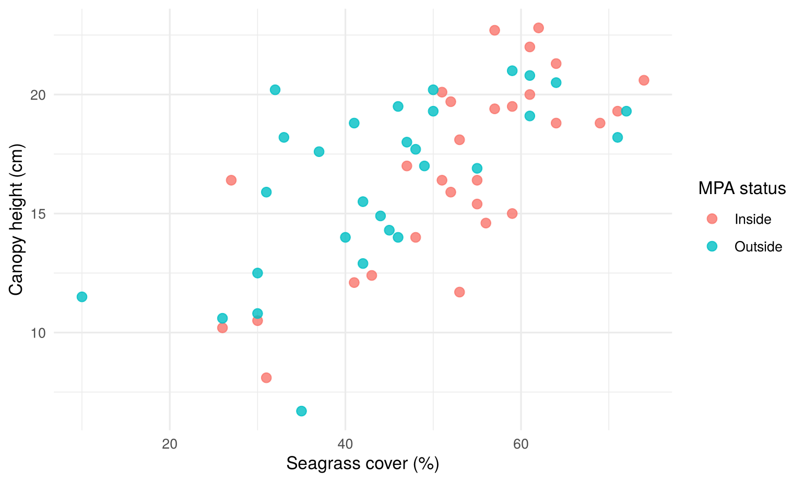
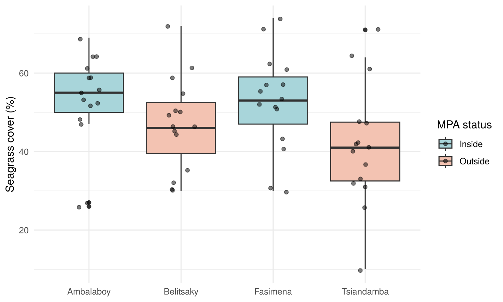
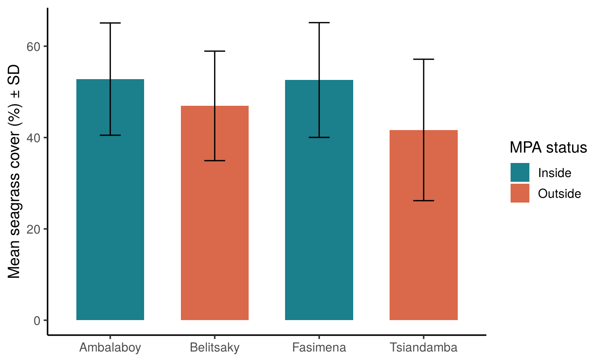
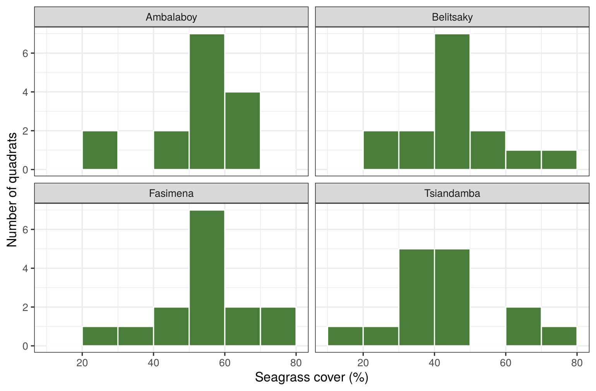

|>;filter(),
select(), mutate(), arrange(),
group_by() + summarise(),
count();ggsave();|> ;filter(), select(), mutate(),
arrange(), group_by() +
summarise(), count() ;ggsave() ;Everything you did in Sessions 1–7 works on any R installation,
without extra packages, and it taught you how R really thinks: vectors,
[ ], $, NA, functions. dplyr
and ggplot2 (part of the tidyverse family) do
not replace that knowledge; they make common tasks shorter and more
readable. Most current R tutorials and scientific code use them, so you
need to be able to read them.
Tout ce que vous avez fait dans les séances 1 à 7 fonctionne sur
n’importe quelle installation de R, sans package supplémentaire, et vous
a appris comment R « pense » vraiment : vecteurs, [ ],
$, NA, fonctions. dplyr et
ggplot2 (de la famille tidyverse) ne
remplacent pas ces connaissances ; ils rendent les tâches courantes plus
courtes et plus lisibles. La plupart des tutoriels R et des codes
scientifiques actuels les utilisent : il faut savoir les lire.
A package is a set of extra functions written by the
R community. Install it once per computer (needs
internet), then load it with library() in
every script that uses it.
Un package est un ensemble de fonctions
supplémentaires écrites par la communauté R. On l’installe une
fois par ordinateur (internet nécessaire), puis on le
charge avec library() dans
chaque script qui l’utilise.
Error in library(dplyr) : there is no package called 'dplyr'
means the package is not installed yet. If an installation fails on
Windows with a message about compilation, check that
Rtools is installed (Session 0).
Error in library(dplyr) : there is no package called 'dplyr'
signifie que le package n’est pas encore installé. Si une installation
échoue sous Windows avec un message de compilation, vérifiez que
Rtools est installé (séance 0).
|>Le pipe |>The pipe sends the result on its left into the first
argument of the function on its right. Read it as
“then”. Shortcut in RStudio: Ctrl + Shift +
M (to get |> rather than %>%,
tick Tools → Global Options → Code → Use native pipe
operator).
Le pipe envoie le résultat de gauche dans le premier
argument de la fonction de droite. Lisez-le « puis
». Raccourci dans RStudio : Ctrl + Maj + M
(pour obtenir |> plutôt que %>%, cochez
Tools → Global Options → Code → Use native pipe operator).
#> [1] 48.5#> [1] 48.5You will also see %>% (from the magrittr
package) in older code: for our use it does the same thing.
Vous verrez aussi %>% (du package magrittr)
dans du code plus ancien : pour notre usage, il fait la même chose.
Each verb takes a data frame and returns a data frame. Inside the
verbs you write column names without
sg$.
| dplyr | Base R equivalent (Sessions 3–5) |
|---|---|
filter(sg, cover > 50) |
sg[sg$cover > 50, ] or subset() |
select(sg, site, cover) |
sg[, c("site", "cover")] |
mutate(sg, prop = cover / 100) |
sg$prop <- sg$cover / 100 |
arrange(sg, desc(cover)) |
sg[order(-sg$cover), ] |
group_by(site) |> summarise(m = mean(cover)) |
tapply() / aggregate() |
count(sg, species) |
table(sg$species) |
Chaque verbe prend un data frame et renvoie un data frame. Dans les
verbes, on écrit les noms de colonnes sans
sg$.
| dplyr | Équivalent en R de base (séances 3–5) |
|---|---|
filter(sg, cover > 50) |
sg[sg$cover > 50, ] ou subset() |
select(sg, site, cover) |
sg[, c("site", "cover")] |
mutate(sg, prop = cover / 100) |
sg$prop <- sg$cover / 100 |
arrange(sg, desc(cover)) |
sg[order(-sg$cover), ] |
group_by(site) |> summarise(m = mean(cover)) |
tapply() / aggregate() |
count(sg, species) |
table(sg$species) |
sg |>
filter(mpa_status == "Inside", seagrass_cover > 60) |> # a comma inside filter() = AND
select(site, quadrat, species, seagrass_cover) |>
arrange(desc(seagrass_cover)) |>
head(5)#> site quadrat species seagrass_cover
#> 1 Fasimena 13 Syringodium isoetifolium 74
#> 2 Fasimena 8 Cymodocea serrulata 71
#> 3 Ambalaboy 1 Thalassia hemprichii 69
#> 4 Ambalaboy 3 Thalassia hemprichii 64
#> 5 Ambalaboy 9 Syringodium isoetifolium 64sg <- sg |>
mutate(cover_prop = seagrass_cover / 100,
cover_class = ifelse(seagrass_cover >= 50, "Dense", "Sparse"))
count(sg, site, cover_class)#> site cover_class n
#> 1 Ambalaboy Dense 11
#> 2 Ambalaboy Sparse 4
#> 3 Belitsaky Dense 6
#> 4 Belitsaky Sparse 9
#> 5 Fasimena Dense 11
#> 6 Fasimena Sparse 4
#> 7 Tsiandamba Dense 3
#> 8 Tsiandamba Sparse 12group_by() + summarise() is the dplyr way
to build the summary table of Session 5 in one block. n()
counts the rows of each group.
group_by() + summarise() est la façon dplyr
de construire le tableau de synthèse de la séance 5 en un seul bloc.
n() compte les lignes de chaque groupe.
summary_site <- sg |>
group_by(mpa_status, site) |>
summarise(n = n(),
mean = mean(seagrass_cover),
sd = sd(seagrass_cover),
se = sd / sqrt(n),
.groups = "drop") # remove the grouping afterwards
summary_site#> # A tibble: 4 × 6
#> mpa_status site n mean sd se
#> <chr> <chr> <int> <dbl> <dbl> <dbl>
#> 1 Inside Ambalaboy 15 52.8 12.3 3.17
#> 2 Inside Fasimena 15 52.6 12.6 3.24
#> 3 Outside Belitsaky 15 46.9 12.0 3.10
#> 4 Outside Tsiandamba 15 41.7 15.5 4.00A ggplot is built by adding layers with
+:
ggplot(data, aes(x = ..., y = ..., colour = ...)) — the
data and the aesthetics (which column goes on which
visual property);geom_point(),
geom_boxplot(), geom_col(),
geom_errorbar(), geom_histogram()…;labs() (titles), theme_*()
(overall look), scale_*() (colours, axes),
facet_wrap() (one panel per group).Un ggplot se construit en ajoutant des couches avec
+ :
ggplot(données, aes(x = ..., y = ..., colour = ...)) —
les données et l’esthétique (quelle colonne va sur
quelle propriété visuelle) ;geom_point(), geom_boxplot(),
geom_col(), geom_errorbar(),
geom_histogram()… ;labs() (titres), theme_*()
(aspect général), scale_*() (couleurs, axes),
facet_wrap() (un panneau par groupe).ggplot(sg, aes(x = seagrass_cover, y = canopy_height_cm, colour = mpa_status)) +
geom_point(size = 2.5, alpha = 0.8, na.rm = TRUE) +
labs(x = "Seagrass cover (%)", y = "Canopy height (cm)", colour = "MPA status") +
theme_minimal()
ggplot(sg, aes(x = site, y = seagrass_cover, fill = mpa_status)) +
geom_boxplot() +
geom_jitter(width = 0.15, alpha = 0.5) + # shows every quadrat
scale_fill_manual(values = c(Inside = "#a8d5da", Outside = "#f3c3b2")) +
labs(x = NULL, y = "Seagrass cover (%)", fill = "MPA status") +
theme_minimal()
Same figure as in Session 6, from the summary table built with dplyr:
Même figure qu’en séance 6, à partir du tableau de synthèse construit avec dplyr :
p <- ggplot(summary_site, aes(x = site, y = mean, fill = mpa_status)) +
geom_col(width = 0.65) +
geom_errorbar(aes(ymin = mean - sd, ymax = mean + sd), width = 0.2) +
scale_fill_manual(values = c(Inside = "#1b7f8c", Outside = "#d9694a")) +
labs(x = NULL, y = "Mean seagrass cover (%) ± SD", fill = "MPA status") +
theme_classic(base_size = 13)
p
facet_wrap() creates one small panel per group — very
useful with many sites:
facet_wrap() crée un petit panneau par groupe — très
utile avec beaucoup de sites :
ggplot(sg, aes(x = seagrass_cover)) +
geom_histogram(binwidth = 10, boundary = 0, fill = "#4a7d3a", colour = "white") +
facet_wrap(~ site) +
labs(x = "Seagrass cover (%)", y = "Number of quadrats") +
theme_bw()
New script scripts/s08_tidyverse.R. Use only
dplyr and ggplot2 functions (plus read.csv()).
filter() +
nrow())cover_class (“Dense” if cover ≥ 50, else
“Sparse”) with mutate(). How many quadrats are Dense?group_by(species) + summarise(): how
many quadrats are dominated by Syringodium isoetifolium, and
what is their mean shoot density (2 decimals)?arrange(desc(...)): at which site is the quadrat
with the highest cover?ggsave().Nouveau script scripts/s08_tidyverse.R. Utilisez
uniquement des fonctions dplyr et ggplot2 (plus
read.csv()).
filter() +
nrow())cover_class (« Dense » si
recouvrement ≥ 50, sinon « Sparse ») avec mutate(). Combien
de quadrats sont Dense ?group_by(species) + summarise() :
combien de quadrats sont dominés par Syringodium isoetifolium,
et quelle est leur densité de pousses moyenne (2 décimales) ?arrange(desc(...)) : sur quel site se trouve le
quadrat au recouvrement le plus élevé ?ggsave().library(dplyr)
library(ggplot2)
sg <- read.csv("data/seagrass_quadrats.csv")
sg |> filter(species == "Thalassia hemprichii", depth_m < 2) |> nrow() # 1
sg <- sg |> mutate(cover_class = ifelse(seagrass_cover >= 50, "Dense", "Sparse"))
count(sg, cover_class) # 2
sg |> group_by(species) |>
summarise(n = n(), mean_density = round(mean(shoot_density), 2)) # 3
sg |> group_by(mpa_status) |> summarise(sd = round(sd(seagrass_cover), 2)) # 4
sg |> arrange(desc(seagrass_cover)) |> select(site, quadrat, seagrass_cover) |> head(1) # 5
summary_site <- sg |> group_by(mpa_status, site) |>
summarise(mean = mean(seagrass_cover), sd = sd(seagrass_cover), .groups = "drop")
p <- ggplot(summary_site, aes(site, mean, fill = mpa_status)) +
geom_col(width = 0.65) +
geom_errorbar(aes(ymin = mean - sd, ymax = mean + sd), width = 0.2) +
labs(x = NULL, y = "Mean seagrass cover (%) ± SD", fill = "MPA status") +
theme_classic()
ggsave("outputs/s08_barplot.png", p, width = 16, height = 11, units = "cm", dpi = 300) # 6